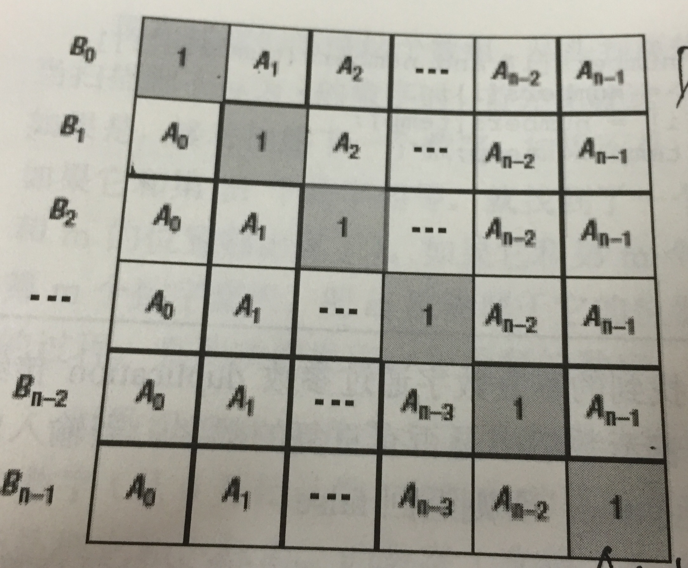

Link: [https://www.nowcoder.com/ta/coding-interviews]
1 - 10
第一题
看到题的直觉是用binary search。
先用暴力搜索–>15ms + 1484k–>O(nm)
对每一行预先判断首尾–>15ms + 1376k–>O(nm)
binary search–>12 + 1504k–>O(n*logm)
最后，发现矩阵整体是有序的，因此可以由左下开始直接判断,复杂度O(n+m)
PS: 设置的测试方案太过简单，直接暴力搜索也不是很慢。
附binary search代码：
1 | bool Find(int target, vector<int> array) { |
第二题
本题较为简单，直接从后往前扫描插入即可。（如果用js/python直接用replace就好了）
第三题
本题较为简单，通过stack使得顺序改变即可。需要注意的是，这题head里面是存数据的。
第四题
由前中/中后序重构树。使用递归完成较为简单。
前中：1. 前序第一个一定是本节的根。2. 找到本节根在中序的位置。3. 计算左树点的数量。
中后：1. 后序最后一个一定是本节的根。2. 找到本节根在中序的位置。3. 计算左数点的数量。
附前中序代码：
1 | TreeNode* R(vector<int> pre, vector<int> vin, int preStart, int preEnd, int vinStart, int vinEnd) { |
第五题
此题较为简单。stack1储存，stack2给予，如果stack2为空时将stack1的点全部输入stack2即可。
第六题
旋转数组找最小成分。直观做法是线性扫描–>37ms.
稍加观察，发现出现先第一个小于首位的数即为最小–>32ms.
第七题
斐波那契数列。
第八题
斐波那契数列变种。$F(n) = F(n-1) + F(n-2)$
第九题
斐波那契数列变种。$F(n) = \sum_{k=1}^{n-1} F(k)+1$
第九题
斐波那契数列变种。$F(n) = F(n-1) + F(n-2)$
第十题
求二进制中1的个数。比较麻烦的是负数。有关负数补码，可以参考另一篇博客“原码，反码和补码”。
其实这道题还可以直接对bit操作，会简单很多。但是我觉得出题人的初衷是要考察对原反补码的理解。whatever。以下是相关代码。
1 | int NumberOf1(int n) { |
11 - 20
第十一题
快速幂，增大base来减少相乘的次数。详细算法可以参考“大数相乘以及快速幂”。
其实直接用写好的pow即可快速通过。
第十二题
方法一：bubble sort。左偶数右奇数->交换。O(n^2).
方法二：新建vector。扫描奇数，扫描偶数。O(n)。
第十三题
方法一：遍历，得到list的大小，再次遍历，找到size-k。
方法二：使用stack，全部存下，然后pop k次。
方法三：使用queue，如果queue大于k，pop。
比较：我个人最喜欢方法三，只需要一次遍历并且存下k个node。属于折中的方法。
第十四题
最简单的方法是使用stack存下全部node，然后再根据stack的顺序新建node。然而需要遍历两遍，且需要新建一个list。
也可以直接操作list，需要记录前，中，后三点。
1 | ListNode* ReverseList(ListNode* pHead) { |
第十五题
较为简单，不做赘述。
第十六题
主要是对递归的理解。分为两个function。sub判断tree2是否为当前tree1的顶端。HasSubtree判断tree1是否包含tree2. 代码下。
1 | bool sub(TreeNode* root1, TreeNode* root2) { |
第十七题
较为简单，使用DFS遍历，然后交换左右子树。
1 | void Mirror(TreeNode *pRoot) { |
第十八题
比较麻烦的简单题。有四种不同状态，判断好边界就不是很难处理。
第十九题
题目要求要stack查找最小值时间复杂度为O(1)。很明显要储存一些数据来支持这个结构。那么我们需要储存什么呢？来看一下需求。要求最小值时间复杂度为1，且每次pop之后，重新寻找最小值也是O(1).设置一个一模一样的结构记录每一次pop后的最小值即可完成目标。
简单来说就是用两个stack，一个用来存放数据，一个用来存放最小值。当新的数值小于stack2.top时，我们将新的数值push到stack2中。
第二十题
本题比较有趣。如果判断某序列是否可以由stack pop出，可以根据“一旦pop，stack中剩余的元素相对order不可能改变”。
然而，本题如果用这种方式来判断，时间复杂度为O(n^2)。
我们可以模拟整个stack push pop的过程，如果最终stack为空，则该序列是合法的。
1 | bool IsPopOrder(vector<int> pushV,vector<int> popV) { |
21 - 30
第二十一题
BFS。使用queue来储存即可。同理，使用stack可以实现DFS。
1 | vector<int> PrintFromTopToBottom(TreeNode* root) { |
第二十二题
递归问题。判断一个序列是否为合法的二叉搜索树后序排列，针对每一个root点，判断其前面序列是否可以分为左树和右树。
1 | bool check(vector<int> sequence, int left, int right) { |
第二十三题
简单的DFS。但是如果用非递归方法，需要维持一些数据结构且要判断边界，很麻烦。
1 | class Solution { |
第二十四题
想破头的题。无论如何都找不到简单的方法，查看了人家的讲解，发现是在原本linked list上进行改动。感觉巧妙的同时也感慨自己的愚鲁。
此处附上偷来的讲解和自己的代码。
1 | RandomListNode* Clone(RandomListNode* pHead) |
第二十五题
中序遍历即可。
1 | class Solution { |
第二十六题
数组中大于一半的数。
方法一：储存一个数，如果不一样则相互抵消，如果一样则增加计数。最后验证该数次数是否超过一半。
1 | int MoreThanHalfNum_Solution(vector<int> numbers) { |
方法二：排序，选取中间的数。但是此法为O(nlogn)。复杂度较高。附quicksort代码。
第二十七题
构建总数为K的最大heap。对每一个元素和heap比较，如果比堆顶小，则替换，重新排列heap。复杂度为O(nlogk)。
然而我用了暴力搜索，AC。大概是结果设置的太简单了。附k堆的代码。
第二十八题
很简单的动态规划题。
1 | int FindGreatestSumOfSubArray(vector<int> array) { |
第二十九题
归纳法，按照每一位来计算。
1 | int NumberOf1Between1AndN_Solution(int n) |
第三十题
简单来说就是对数的排序。即从最高位到最低位的排序。我贴上两种做法。
1 | struct gter { |
31 - 40
第三十一题
丑数。很明显，后面的数要由前面数产生。那么如何产生呢？基本上这类题的做法都是维持一个数列，每一次push一个最小的候选人。难点在于确定候选人。
很明显，候选人=前人2或者前人3 或者前人5。前人可以是数组中任意的数，那么复杂度为O(n^2)。
然而，稍加思考，便可以得知，有很多都不必要验证。比如上一次选择的是23，那么对于前人*3这个选项，2就可以被剔除掉。因此，只需要维持三个pointer即可。
1 | int GetUglyNumber_Solution(int index) { |
第三十二题
找只出现一次的数。很明显是线性时间。使用bucket sort 来储存出现的个数（使用map也可以，不过map的开销更大）。
第三十三题
很恐怖的一道题。算法还是比较简单的，用merge sort 的思想，在合并的时候从最后一个单位开始比较。一次比较可以增加size/2个逆序数组。
值得注意的是，在递归的时候一定要用引用！
1 | class Solution { |
第三十四题
本题比较简单。扫描得到长度，然后再扫描一次即可。
第三十五题
binary search。
第三十六题
两种做法，第一种递归。比较简单。第二种bfs，需要控制几个变量来记录第几层。
第三十七题
方法一：直接递归，每一次求子树高度。但是balance要便利一遍，每个点都要求一次深度，所以复杂度为O(n^2).
方法二：直接求深度，如果左右子树不符合要求，直接返回false即可。
1 | class Solution { |
第三十八题
方法一，直接用map。bucket sort的思想。扫描两次即可。
1 | void FindNumsAppearOnce(vector<int> data,int* num1,int *num2) { |
方法二，利用xor，一定是奇数个数字的结果。同样是扫描两次，由于不用构建map，速度会快很多。
1 | class Solution { |
第三十九题
比较简单，求中间数字，要注意边界。
1 | vector<vector<int> > FindContinuousSequence(int sum) { |
第四十题
维持两个指针，保证右端一定大于左端。从左到右扫描数组，对每一个数A，从右到左扫描数B。
线性时间。
1 | vector<int> FindNumbersWithSum(vector<int> array,int sum) { |
41 - 50
第四十一题
简单的做法就是用辅助数组，然后线性扫描即可。
但是上述做法需要额外的空间，还有一种不需要空间的做法。YX = (XT YT)T
即对前后分别做反转，然后对全部做反转。需要扫描三次，但是不需要空间。
1 | string LeftRotateString(string str, int n) { |
第四十二题
注意系数即可完成。比较简单。
1 | string ReverseSentence(string str) { |
第四十三题
比较简单。
1 | bool IsContinuous( vector<int> numbers ) { |
第四十四题
简单做法当然是模拟。构建数组然后循环。但是这种题明显是可以从公式中推出来的。
约瑟夫环${f(n,m)=(f(n-1,m)+m)%n}$
由此可以写出递归代码。
1 | int LastRemaining_Solution(int n, int m) |
第四十五题
卡了半个小时，看了各位大佬的做法，心态有点小崩。任重而道远啊。
方法一：使用sizeof模拟乘法，使用位数移动模拟除法。
1 | int Sum_Solution(int n) { |
方法二：使用&&短路的特性模拟if
1 | int Sum_Solution(int n) { |
第四十六题
很明显是要从bit位来作。
二进制加法，如果xor结果为1，则不进位。结果相应位应为1.
如果and结果为1，则需要进位，结果高一位应为1.
那么如何把这两个结合到一起呢？用一个循环直到xor等于0就好了。
1 | int Add(int num1, int num2) |
第四十七题
每一位来转换。
1 | int StrToInt(string str) { |
第四十八题
bucket sort的思想。如果已经有数，返回。
1 | bool duplicate(int numbers[], int length, int* duplication) { |
第四十九题
很有趣的一道题。要用reuse的思想。如何reuse之前的结果呢？以下图说明了做法。

1 | vector<int> multiply(const vector<int>& A) { |
第五十题
正则表达式，递归来做。
1 | bool match(char* str, char* pattern) |
第五十一题
注意细节。分几个case
case1. integer（+/- [1-9][0-9]* or 0)
case2. float (+/- [0-9].[0-9])
case3. e (float E integer)
1 | bool isInteger(char* string, int start, int end) { |
第五十二题
比较简单。因为给定的是char，所以用bucket sort计数即可。
1 | class Solution |
第五十三题
三个方法。
方法一，直接keep住过往的node，然后对每一node检查是否访问过。O(n^2).
1 | bool isVisited(vector<ListNode*>& v, ListNode* node) { |
方法二，每次访问之后，把前面的链接断掉。这样如果出现loop，则下一次访问时，next为null(ps: 不过这样会破坏原有的list). O(n)
方法三，先求出ring的长度a，然后让指针一先走a，指针b再走。则ab相遇时，一定在入口点。O(n)
1 | ListNode* EntryNodeOfLoop(ListNode* pHead) |
第五十四题
暖心题。比较简单。
1 | ListNode* deleteDuplication(ListNode* pHead) |
第五十五题
分类讨论，共有三种case，node是左子，右子，家长。
1 | TreeLinkNode* GetNext(TreeLinkNode* pNode) |
第五十六题
使用递归可以轻松解决。方法一，构建镜像，再比较是否相等。方法二，直接比较两个节点的左右是否对称。
1 | class Solution { |
第五十七题
BFS即可。值得注意的是，如果要在bfs得到层数，需要改变queue的pop时机，每一次都pop一层。
1 | vector<vector<int> > Print(TreeNode* pRoot) { |
第五十八题
同上一题一样。
第五十九题
用dfs可以完成。值得注意的是，妥善使用c++中的引用可以很elegant的完成任务。
1 | class Solution { |
第六十题
使用dfs遍历即可。O(klogn)
1 | class Solution { |